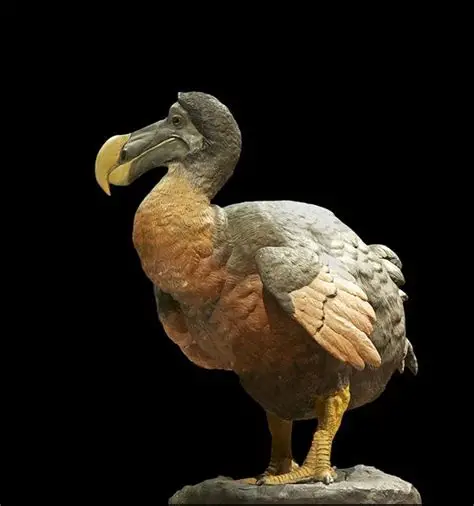

The Dodo Bird
The dodo was a flightless bird that lived on Mauritius and went extinct in the 1600s due to hunting and introduced animals.
It has become a symbol of extinction and the need for wildlife conservation.

Home